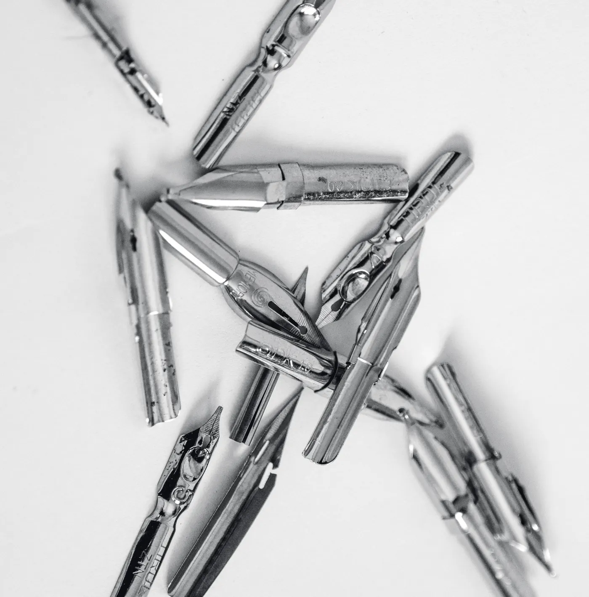
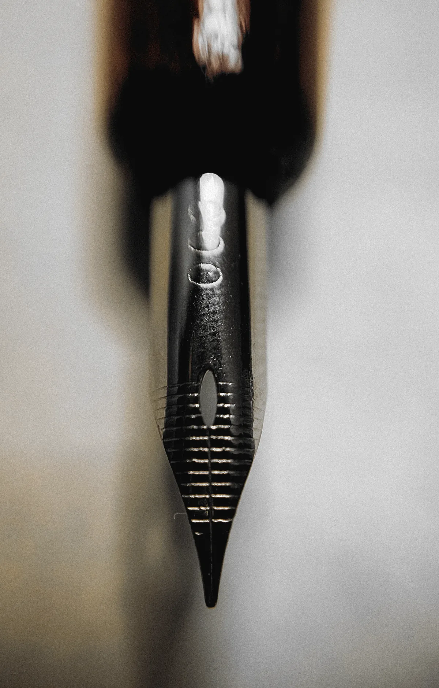
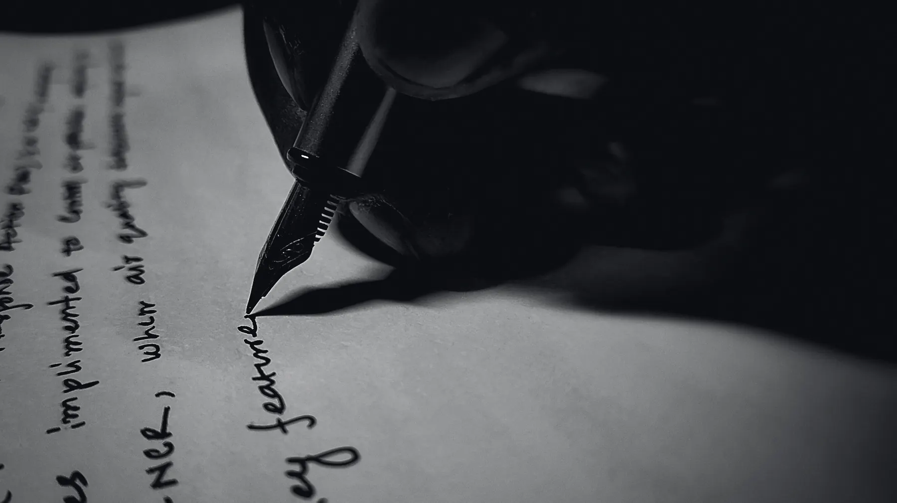
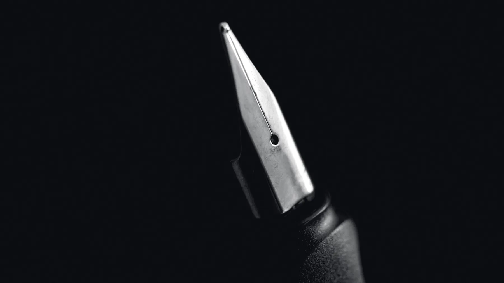
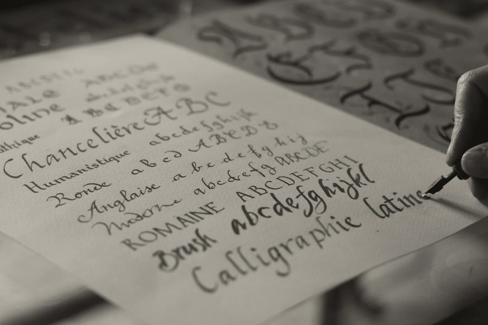

Ground to this pen.
Not stamped to a standard.
One pen. One nib size. Every tipping put to the wheel by one hand, to the pen it ships in, and written with before it leaves.
- Nib
- #6, 14k gold, 58.3 % fine
- Tipping
- Platinum-group alloy, hand-ground
- Bench
- Kelham Island, Sheffield
Six grinds, 0.25 mm to 0.9 mm · £245, the grind included · Order one
- Stamped
- from sheet, one die
- Tipped
- one pellet, welded
- Slit
- one pass of a disc
- Ground
- by hand, to this pen
Stamped identical. Ground individual.
Every nib begins as a blank pressed from a sheet of 14k gold, the same die for every one. A pellet of hard alloy is welded to the point — still called iridium out of habit, though there has been no iridium in it for decades. A disc cuts the slit. Up to here the nib is a part like any other part, and one is as good as the next.
Then the tipping goes to a wheel, and to lapping film, and to paper. Its two faces are ground until they meet the sheet at the angle a hand will actually hold it. From that moment no two nibs are the same, and the letter on the box stops being a promise and starts being an estimate.
We don’t argue with that. We finish the job the die started, one nib at a time, and write with each one before it goes in a box.

- Measured
- under a 10× loupe
- Written
- on 80 g/m² paper
- Held to
- ± 0.05 mm of the box
Why two of the same pen write differently.
From one tray of factory mediums we measured lines of 0.52 mm and 0.71 mm. Both boxes said M.
- Tipping shape
The two ground faces decide the width and the sweet spot. Finished by machine in a batch, they land where they land.
- Tine alignment
Two tines a hair out of level scratch on one side and skip on the other. We set them under the loupe, not by feel.
- Slit width
Cut identical, eased by hand. Too tight starves the line; too open floods it.
- Your angle
Most hands hold a pen between 40° and 55° to the page. A nib ground for 50° drags at 40°. Tell us yours; we grind for it.
- Paper and ink
A wet ink on soft paper writes a size wider than the same nib on a hard sheet. Our widths are measured one way, and we say which.


- Contact
- tipping only
- Area
- under 1 mm²
The tipping is the only part of the pen that ever touches the paper. It is the only part we don’t let a machine finish.

- Drawn at
- 10× · 1 mm = 10 px
- Measured on
- 80 g/m², wet blue-black
Six grinds. Pick one; it’s in the price.
Each name below is set in the cut of type nearest the line it makes. The rules under it are the line itself at ten times: the down stroke, then the cross stroke.
-
Round
EF · F · M · B 0.4 · 0.5 · 0.6 · 0.8 mm
Ground to a ball and polished until it forgets it was ever a pellet. The line is the same in every direction. Most people want this and don’t know it.
M · 0.6 mm, every direction -
Stub
Two widths 0.7 · 0.9 mm
Flat across the writing edge, corners rounded. Down strokes take the full width; cross strokes take a third of it. Forgives a rolled wrist.
0.9 mm down0.3 mm across -
Cursive italic
Three widths 0.55 · 0.7 · 0.9 mm
The stub with its corners left on, softened just enough not to catch. Sharper thick and thin, letters with real corners, less patience for rotation.
0.7 mm down0.2 mm across -
Needlepoint
One width 0.25 mm
The smallest point that still carries ink. Finer than a 0.3 mm pencil on hard paper. You will hear it. For margins, ledgers and small hands.
0.25 mm, every direction -
Left-foot oblique
Two widths, 15° 0.6 · 0.8 mm
Cut fifteen degrees off square for a hand that turns the pen inward. Ground to the angle you tell us, or the one we read off a page you send.
0.8 mm down · 15°0.3 mm across -
Architect
One width 0.6 mm across
The italic turned through ninety degrees: thin down, broad across. Named for the hand that letters drawings. On block capitals nothing else comes close. No roman type writes this line; the rules do.
0.25 mm down0.6 mm across
- Written
- before the box is closed
- Posted
- under the pen, in the box
- Line
- yours, if you send one
Every pen leaves with the page it was written on.
Figure-eights first, because they show a skip before a word does. Then the alphabet, upper and lower. Then the line you gave us, in the ink you told us you use, on the paper we say the widths are measured on. The sheet goes in the box under the pen.
If the sheet is wrong, the pen doesn’t ship. Usually it’s the first nib of the morning; that one goes back in the drawer and gets done again after lunch, when the hands have settled. I’d rather you got the second one.

- Model
- No. 1, the only one
- Price
- £245, grind included
- Lead
- three weeks at the moment
One pen. £245.
- Barrel
Brass, turned, under black lacquer. Cap band and clip gold-plated, and the clip is there so it stays where you put it.
- Section
Black lacquer over brass, a gold-plated ring at the nib. The lacquer will wear where your fingers sit; that is the pen telling you where you hold it.
- Nib
#6, 14k gold, ground to the grind you choose.The grind is the price, not an extra.
- Fill
Standard international cartridge, or the converter in the box.
- Size
141 mm capped · 28 g inked
- Lead time
Ground in the order paid. Three weeks at the moment.